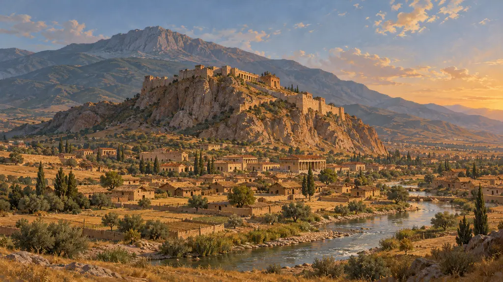
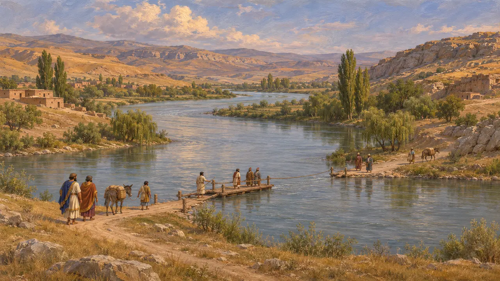
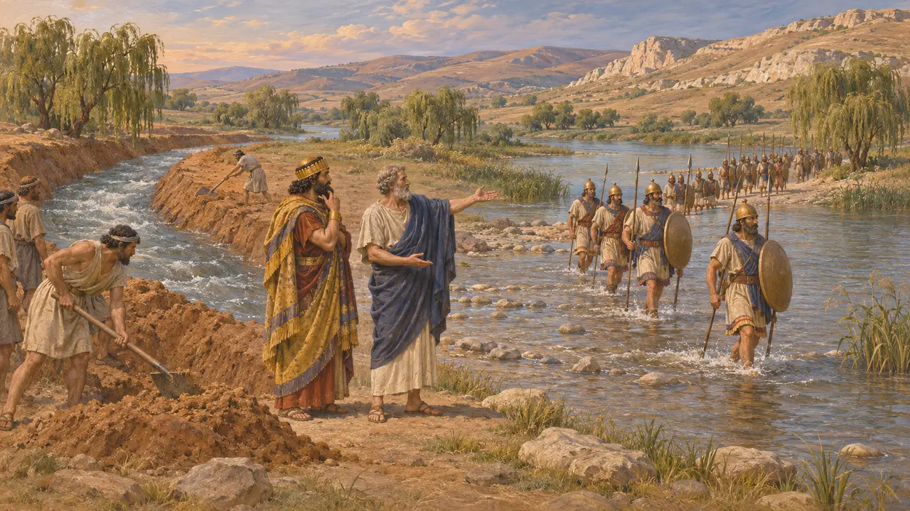
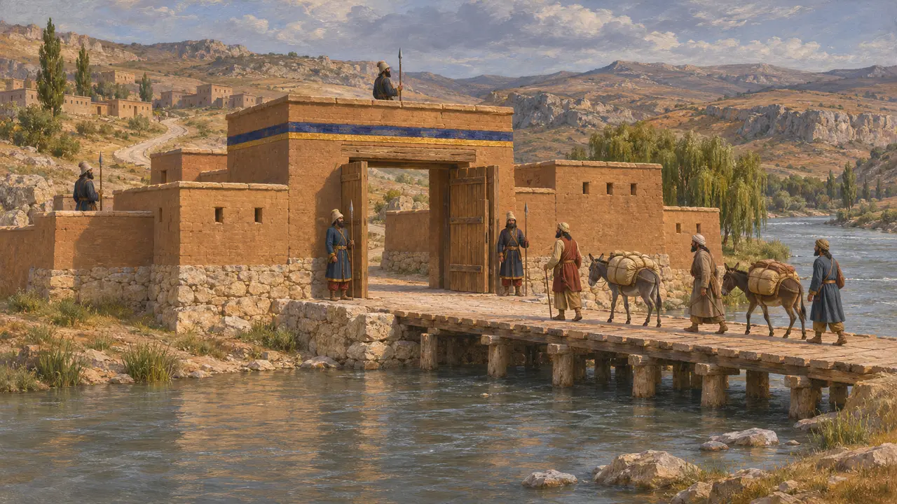

ハリュス川
アナトリア中央部の大河。リュディアの国境であり、街道の渡河点でもあった(紀元前6世紀)
ハリュス川は現在のクズルウルマクで、アナトリア最長の河川であり、北へ湾曲して黒海に注ぐ。紀元前6世紀には、リュディア王国とその東の隣国との境界をなしていた。ヘロドトスは、クロイソスがこの川を渡って戦争を始め、それがサルディスの陥落に終わったと語っている。
ゲームでは： 本作でハリュス川が登場するのは、サルディスの陥落とエフェソスの戦いに関する出来事の記事のみで、独自のメカニクスはありません。

王国の境をなした川
古代の記述ヘロドトスは、ハリュス川が南に源を発し、シリア人とパフラゴニア人の地を過ぎて北へ流れ、黒海に注ぐと記している。この川がリュディア王国とメディア王国を分けていたこと、また日食のさなかに戦われた戦いののち、両王家の婚姻によって和約が結ばれたことも述べている。国境としての役割は彼の記述によるもので、それを裏づけるリュディアやメディアの文書は残っていない。
Herodotus 1.72, 1.74
クロイソス、キュロスを攻めるべく渡河する
古代の記述ヘロドトスによれば、クロイソスはキュロスを討って王国を広げようと望み、ハリュス川を越えて東のカッパドキアへ進軍した。プテリアでキュロスと戦ったが勝敗は決せず、冬を越すためサルディスへ退いた。キュロスはこれを追い、サルディスは陥落した。現在は多くの歴史家がプテリアをケルケネス・ダーの山上都市に比定しており、以前はヒッタイトの遺跡ボアズキョイにあてる説が有力だった。
Herodotus 1.75, 1.76
バビロニアの年代記が語ること
同時代の記録バビロニアの文書『ナボニドゥス年代記』は、ナボニドゥスの治世第9年に、パルスの王キュロスがある国へ進軍したと記している。その国名は粘土板の損傷部分にあり、かつてはリュディアと読まれたが、現在はウラルトゥと読む研究者も多い。現存する本文はこの箇所が損なわれており、ハリュス川も戦場の名も伝えていない。そのため、この戦争のペルシア側については、主にギリシアの著述家を通じて知られている。年代は紀元前547年か546年ごろとされ、どちらかをめぐって研究者の議論が今も続いている。
Nabonidus Chronicle

神託と流れを変えられた川
後世の伝説ヘロドトスによれば、デルポイはクロイソスに、ハリュス川を渡れば大帝国が滅びると告げ、彼はそれをキュロスの帝国のことだと受け取った。この話は、神の言葉を読み誤ることへの教訓として形づくられている。ヘロドトスはさらに、ミレトスのタレスが軍を渡らせるために川の流れを変えたというギリシア人の話も伝えているが、自分ではそれを信じないと述べている。
Herodotus 1.53, 1.75

王の道に沿うハリュス川
古代の記述征服ののち、この川はペルシア帝国の領内に入った。ヘロドトスによれば、サルディスからスーサへ至る道はハリュス川を渡る地点で、城門と堅固な衛兵所を通っていた。このことは、紀元前500年頃の道の記述において、この川が管理された渡河点であったことを示している。彼の記述は、この区間の道に関する主要な証拠である。
Herodotus 5.52
出典
- Herodotus 1.53, 1.72-76
- Herodotus 5.52
- Nabonidus Chronicle (Babylonian chronicle for Nabonidus's ninth year)
- P. Briant, From Cyrus to Alexander, 2002